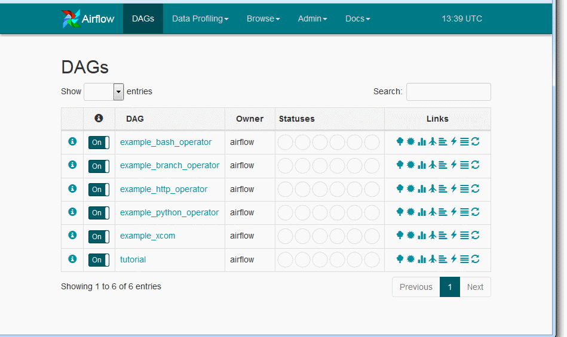

Airflowのインストールメモ
なんかリクエストがあったようなので、インストールメモを残しておこう。 ついでに環境も残しておいていつでも起動できるようにしておこう。
インストール
基本的にはpip install airflowなんだけど、numpyのビルドをうだうだやった後になって「これ、--allow-externalがいるんだけど」なんて
言ってくるので面倒（どういうときにallow-externalがいるのか知らないけど）。最終的な手順としては以下のとおり。
$ virtualenv env $ . env/bin/activate $ pip install --allow-external pygments pygments $ pip install --allow-external python-dateutil python-dateutil $ pip install --allow-external requests requests $ pip install --allow-external setproctitle setproctitle $ pip install airflow
virtualenvをactivateしたら最初にnumpyを入れるのもアリかもしれない。
初回起動（DB作成）
$ export AIRFLOW_HOME=~/python/airflow $ airflow initdb
起動（Web UI、ワーカー）
$ airflow webserver -p 8080
8080ポートにアクセスすると以下の画面が見える。

登録されているジョブの実行
$ cd ~/python/airflow $ . env/bin/activate $ export AIRFLOW_HOME=~/python/airflow $ airflow run example_bash_operator runme_0 2015-01-01 Sending to executor. Logging into: /home/kounoike/python/airflow/logs/example_bash_operator/runme_0/2015-01-01T00:00:00
example_bash_operatorというDAGのrunme_0というジョブが実行される。
課題
- 前提ジョブを含めて一通りのフローを実行するコマンドが分からないから、1個1個ジョブをrunする必要がある
- Web UIからジョブの実行をさせるにはCeleryを入れないといけないみたい
- 認証のかけ方は？
- ジョブ・DAGの登録の仕方を調べていない
- スケジュール実行よりで（上も過去の時間を設定することで即時実行させている）イマイチ？